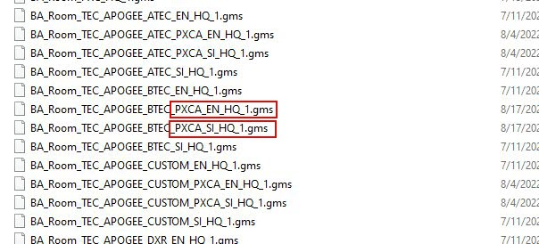
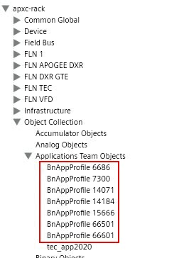
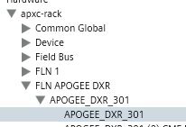
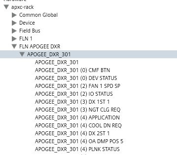
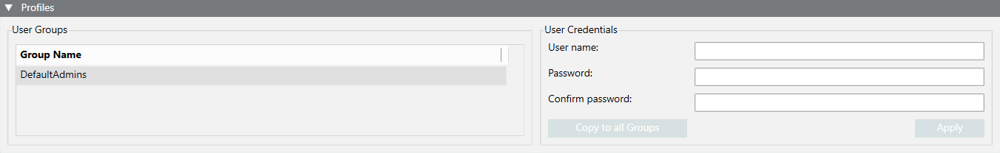

APOGEE PXC.A Overview
APOGEE PXC.A software allows you to install new or existing APOGEE PXC.A devices while maintaining APOGEE functionality. The APOGEE PXC.A devices support BACnet IPv4, BACnet IPv6, and BACnet/SC protocols.
Once the software is installed, you can do the following:
- Discover devices.
- Use the Network Wizard to configure APOGEE PXC.A networks.
- Use the built-in TechOp editor to define login credentials so that you can view and modify objects in your networks without needing to login each time.
APOGEE PXC.A versus APOGEE BACnet Devices
- For executing backup and restore operations, the APOGEE PXC.A panels require a user account defined in the panel to have the BACnetBackup&RestoreOperators role assigned to it. Additionally, in the Desigo CC BACnet tab, the Reinitialize password must match that users password that is stored in the APOGEE PXC.A panel.
- Point Editing and PPCL Editing are done using the PXC.A onboard editor instead of Desigo CC. To facilitate navigation to the onboard PXC.A editors, a link is provided in Related Items which opens the editor in a Desigo CC secondary pane. Optionally, PXC.A login credentials can be configured for each network hosting PXC.A devices.
- When an object, for example an EE object, is initially added to the Apogee PXC.A panel using one of the Desigo CC editors, the object is placed immediately below the device in the Management view hierarchy. To move the object to its correct location in the hierarchy, you must rediscover a panel.
- Calendars in PXC.A panels are considered global data. Therefore, the Desigo CC editor can only be used to modify calendars in the PXC.A device designated as the data master.
- PXC.A panels can be discovered but not directly imported from a tools provided file.
- APOGEE Report Tables are not supported. Instead, use the Object table.
- APOGEE PXC.A panels support BACnet/SC as well as BACnet IP.
- The PXC.A discovery does not support Logical View.
- In the Management view the discovered objects under a PXC.A device display in a multilevel hierarchy, rather than a flat list
- The object models used for PXC.A devices and objects differ from Apogee BACnet object models. In most cases, the PXC.A models expose additional properties not available in APOGEE BACnet.
FLN Application Functions
FLN applications on PXC.A devices require separate application functions than those used by Apogee BACnet and Apogee P2. Before discovering a PXC.A panel, it is recommended that the appropriate “PXCA” function libraries be imported. Note that these libraries have a similar name to those used for Apogee BACnet and P2, except that they have the text “PXCA” inserted in the library name.
The PXCA versions of the functions are located in the libraries shown below:

APOGEE P1 Support in APOGEE PXC.A Panels – Starting with Desigo CC V6.0
- When a P1 FLN is discovered, it displays as a folder directly under the APOGEE PXC.A panel.
- The P1 FLN devices and sub points display under the respective FLN folder.
- Only TEC sub points modeled in the APOGEE PXC.A device are discovered and accessible.
This is controlled at the panel by the Application Point Team associated with the TEC controls.
Assigning Functions to TEC devices
The Apogee_BACnet_TEC extension model provides the TEC Function libraries for a P1 FLN connected via the APOGEE PXC.A panel. These libraries are identified by the string “PXCA” in the name library name, for example: TEC_APP_P1_PXCA_EN_1. The functions within these libraries also have “PXCA” in their name, for example “TEC_APPL_PXCA_2020_EN”.
Before discovering an APOGEE PXC.A panel with P1 FLN’s, determine which applications are on the P1 FLNs and import the appropriate libraries. Discovery automatically assigns the associated function. This allows the APOGEE PXC.A panels to access the graphic templates and other functionality provided by the APOGEE_BACnet_TEC extension module.
Because of current limitations in the firmware, initial values cannot be viewed and set from Desigo CC and the FLN Commander is not available for use.
APOGEE P1 Support in APOGEE PXC.A Panels – Starting with Desigo CC V7.0
- Custom functions will have a function automatically generated upon discovery.
APOGEE BACnet FLN Support in APOGEE PXC.A Panels
In Desigo CC V7.0, a special version of the APOGEE PXC.A extension module must be installed, along with a specific patch of Apogee BACnet extension model. The Apogee BACnet patch is included with DCC V7 Quality Update 1. However, the special version of APOGEE PXC.A will not be included in DCC V7 Quality Update 1. Please see the special marketing release for DCC PXC.A MR3 for instructions on obtaining and installing this release.
When DCC 8 is released, it will include PXC.A BACnet FLN support.
Discovery of BACnet FLNs
PXC.A BACnet FLNs are brought into Desigo CC using the discovery process. During discovery, the following will occur:
- An “FLN BACnet Application” object will be created for each BACnet Profile Object in the device. These objects will be placed under the Application Team Objects folder:

- A BACnet FLN Device Object will be placed under the appropriate folder for each BACnet FLN device.
- A BACnet Device Object will be placed below each BACnet FLN device:

- If a FLN Subpoint List already exists for a BACnet FLN Device’s application, it will be used to determine any subpoints which need to be created under the device:

- If a FLN Subpoint List does not exist for the application, one will be created automatically with all subpoints deselected. The list of subpoints will be the same as those found in the FLN BACnet Application Object that corresponds to the application. After discovery, this list can be edited using the FLN Subpoint Selector Snap In, and the Resync Devices button can be used to rediscover all devices using the application.
- If a PXC.A TEC application function already exists for the BACnet FLN Device’s application, then it will be assigned automatically. TEC application function names take the form “TEC_APPL_PXCA_nnnn_EN” or “TEC_APPL_PXCA_nnnn_SI”, where “nnnn” is the application number. Discovery uses the device’s "System of Units" and "Application Number" properties to determine the name of the function.
Custom Functions Creation
If a PXC.A function does not exist for an application, one can be created after discovery completes. The function can be generated automatically by using the Create PXCA Function command available on the present value property of the BACnet FLN Device object. Note that the command is only enabled if the present value of the device is “Operational”. To generate a function, follow these steps:
- Select the BACnet FLN Device.
- In the extended tab of the contextual pane, press the Create PXCA Function”command available on the present value property.
- Select “0” to generate an English units function or “1” to generate an SI units function.
- Press Send.
- If the function to be created already exists, or is already in process of creation, an error message will display. Otherwise, a message will indicate that the command was sent. Another message will confirm when creation completes.
- The new function will appear under the Functions folder of the project level library in Management View.
- Since the function is generated by directly reading subpoint properties from the device, it is possible that the creation operation could take longer than the command processor timeout. In this case an error message is displayed, however, the function creation will likely still succeed. Always check the project level folder to see if the function was created.
- After the function is created, the display options for the subpoints can be edited using the Models and Functions snap in. By default, application creation will enable some common points for display in Main Operation and Command Bubble (i.e., if they use common names such as ROOM TEMP). The recommendation is to keep the number of subpoints displayed in Main Operation (DL 2) limited to only the necessary subpoints.
- Use the FLN Subpoint Selector to determine which subpoints to instantiate for a given application and use the Resync button to apply the changes to all BACnet FLN Devices using this application number. The resync operation causes all PXC.A panels that have a BACnet FLN Device using the given application number to be rediscovered. This will instantiate any changes to the desired subpoints, as well as apply the TEC_APPL_PXCA_nnnn function if it exists.
APOGEE PXC.A Workspace
In System Browser, clicking on a BACnet network displays several tabs in the Primary pane, including the APOGEE PXC.A configuration tab. When you select the tab, a Toolbar and the Profiles expander displays. In this tab, you can configure a login credential for the APOGEE PXC.A’s on a network. This allows you to link to the PXC.A embedded editors from related items without the need to login in every time.
The Profiles expander section displays as follows:

Item | Description |
| Saves any changes to User Groups and User Credentials. |
User Groups | Lists all Group Names eligible to log in. |
User Credentials | The User Name and Password that allows a single sign on for the user when the link from Related Items is selected. Configure a login credential for the APOGEE PXC.A’s on a network. This allows you to link to the PXC.A embedded editors from the Related Items without having to login in every time. |
Copy to all Groups | Copies the User Credentials to all User Groups once Save is clicked. |
Apply | Applies the User Credentials to the selected Group Name. |

BACnet Driver
By default, a Desigo CC project has no BACnet driver added. You will add one when you run the Network Wizard later in this workflow.
For additional background information, see BACnet Driver, or in the Help system navigate to Engineering Reference > Connectivity > BACnet > BACnet Driver.
BACnet Network
By default, a Desigo CC project has no BACnet network defined. You will add one when you run the Network Wizard later in this workflow.
For additional background information, see BACnet Network, or in the Help system navigate to Engineering Reference > Connectivity > BACnet > BACnet Network.
BACnet Devices
After you run the Network Wizard, you will discover APOGEE PXC.A devices by configuring the Discovery tab.
For additional background information, see BACnet Devices, or in the Help system navigate to Engineering Reference > Connectivity > BACnet > BACnet Devices.